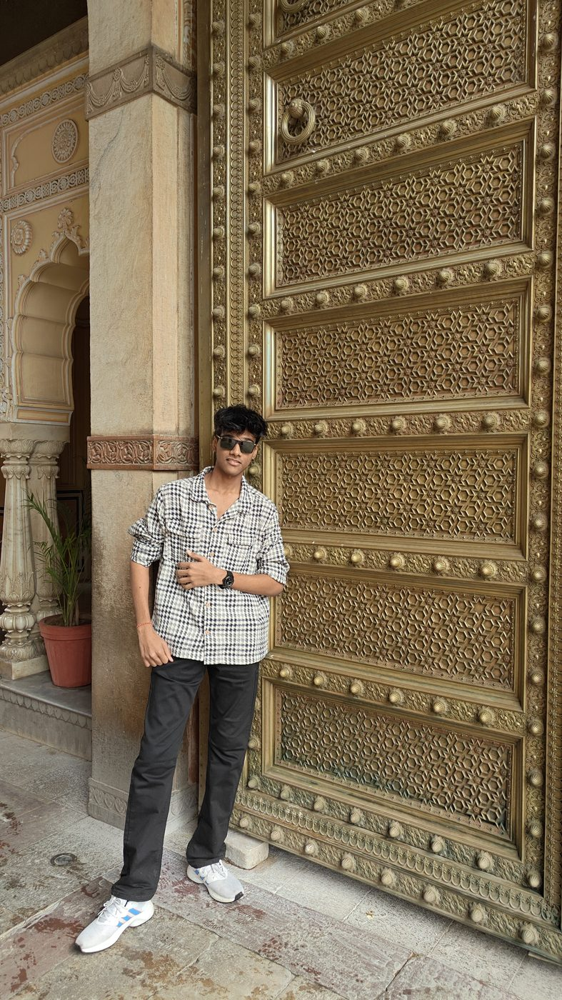
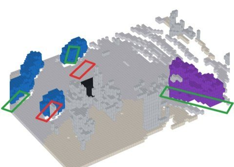

Plans Are Not Interventions: Measuring and Repairing Plan Leakage in Driving World Models
Grounded 4D World Models Workshop, Conference on Robot Learning (CoRL 2026, Spotlight, Best Novel Idea Award)
[ paper ] [ project page ] [ code ]
20, based in mumbai. i want to solve problems for the greater good.
i like working on robot learning, world models and self-driving, and side-questing on a lot of other things.
it’s evening in mumbai right now.

Grounded 4D World Models Workshop, Conference on Robot Learning (CoRL 2026, Spotlight, Best Novel Idea Award)
[ paper ] [ project page ] [ code ]

WAM-AD Workshop, IEEE/CVF Winter Conference on Applications of Computer Vision (WACV 2027)
[ paper ] [ project page ] [ code ]
we can talk at sahilvapage@gmail.com
to start with, i wanted to tackle the hardest problem i could sense in robotics. so i got my hands dirty with dexterous manipulation, with the plan of somehow controlling it with brain signals lol.
i 3d printed and built pollen robotics’ amazing hand.
imitation learning to teach the hand to do stuff. a teleop device for a dexterous hand is hard to make, so i recorded expert demos of my own hand with a stereo depth camera (oak-d pro), recovered the 3d hand poses from the videos, and mapped them onto the robot hand by solving inverse kinematics.
then trained rl policies for in-hand manipulation and attempted sim2real: a policy that keeps a cube turning in the palm, and a real setup with a camera tracking the cube.
also attempted the brain-signal part by recording eeg, and mounted the amazing hand on an so-101 arm. tried making it all work lol!
next i worked with imitation learning policies and vision-language-action models, first on so-101 arms, then on yam arms.
teleoperated data collection, then training and fine-tuning policies.
audited 521 evaluations of 7 vlas (including π0, π0.5, smolvla, x-vla and gr00t) on libero and simplerenv, to point out the hidden choices beneath the policy that move the scores. read the blog.
built keen technologies’ physical atari setup about 6× cheaper, for about $55 in actuators, by porting it to cheap sts3215 servos (code).
reinforcement learning on the hardware atari: it learned to play pong overnight, training on its own hardware.
i’ve been a fan of self-driving cars from day one, and started by building mcqueen, an end-to-end, vision-only driving stack on an rc car.
a jetson nano streams the camera over the internet to a remote rtx 4090 that drives it in real time, using openpilot’s vision encoder and a head trained on my own drives.
that pulled me into openpilot itself. i distilled its driving model into a 17m-parameter student, ported comma’s 4b world model to one gpu, trained the student inside it, and got my first pull request merged by comma: 3× faster loading with 7× less memory.
then we checked whether that simulator tells the truth. it didn’t: when our car doesn’t brake, the car ahead copies our speed, so 7 of 7 crashes stay hidden. we fixed it without retraining, by re-rendering every frame from where our car really is (like zhang et al.).
with a simulator we could trust, we ran rl on comma’s driving policy. crashes when braking was needed fell from 23% to 2%, and steering drift almost halved, while normal driving stayed the same.
apart from all of the above, i have a great time as head of marketing and public relations at the society of robotics and automation (sra).
we keep building frontier work and research, learning from our seniors and mentoring our juniors on cool stuff.
as part of sra i’ve sold robot kits to 200+ students and taught workshops on mario and pixels.
runner-up at smart india hackathon 2025, building an anti-drone system for the indo-tibetan border police. ended up hacking radio frequencies and software-defined radios lol!
won the cognition hackathon with decide, a system-one model that runs on a cpu with max accuracy and min latency lol!